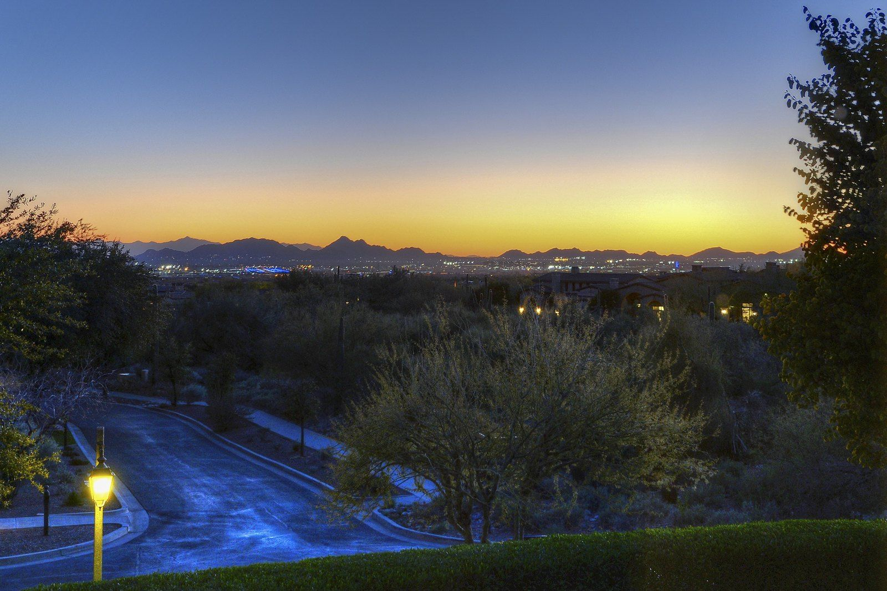
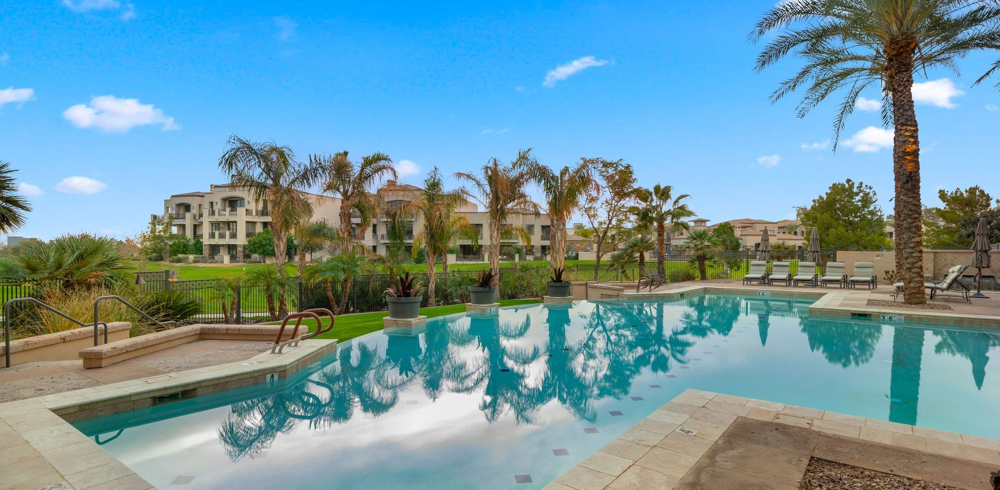
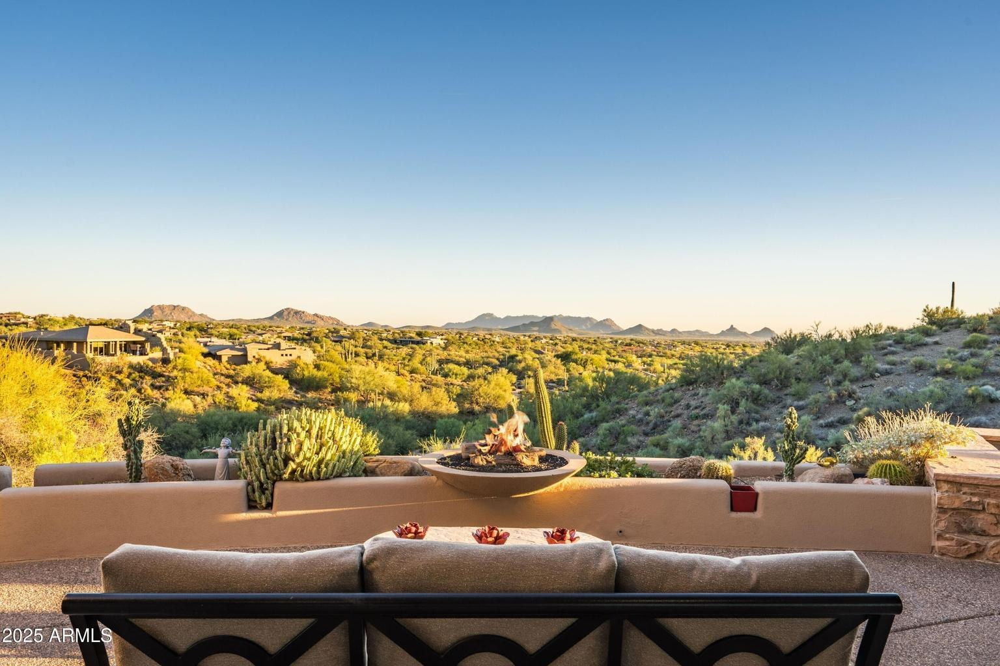
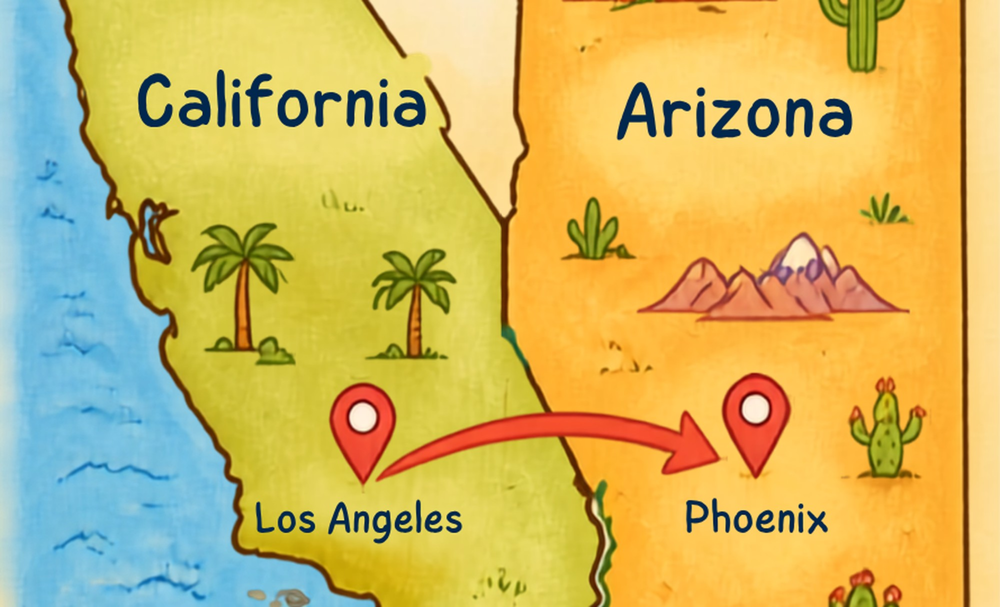
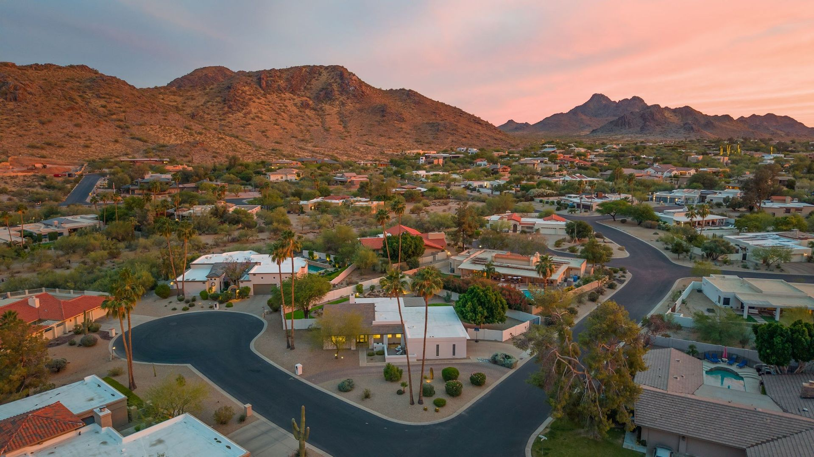
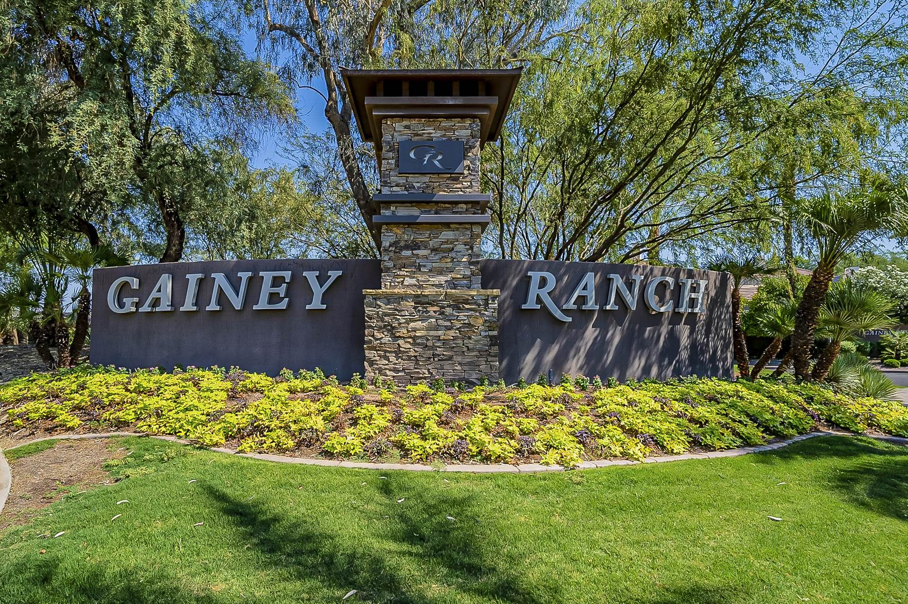

Scottsdale & Phoenix Real Estate Insights
Local market data, relocation guides, and neighborhood comparisons from Laura Jorden, Compass.

October 17, 2026
Buying a Second Home in Scottsdale: A Snowbird's Guide to Seasonal Luxury Living
What seasonal residents need to know about buying a winter home in Scottsdale, from timing the market to Arizona's property tax rules for second homes.
Read the article →
October 10, 2026
Biltmore Living: Scottsdale-Caliber Luxury Minutes from Downtown Phoenix
Why Phoenix's Biltmore corridor delivers Scottsdale-level luxury, golf, and shopping with a shorter commute to downtown Phoenix and Sky Harbor.
Read the article →
October 3, 2026
Inside Scottsdale's Guard-Gated Communities: Desert Mountain, Silverleaf & Troon North Compared
A side-by-side look at Scottsdale's three premier guard-gated golf communities for buyers who want privacy, security, and resort-caliber amenities.
Read the article →
September 26, 2026
Relocating from California to Scottsdale: The 2027 Luxury Buyer's Playbook
Why California's wealthiest homeowners keep choosing Scottsdale, the tax math behind the move, and what a California-to-Arizona luxury purchase actually looks like.
Read the article →September 19, 2026
Scottsdale vs. Phoenix: Where Luxury Buyers Should Really Be Looking in 2027
How Scottsdale and Phoenix compare for luxury buyers on price, lifestyle, and value heading into 2027, and how to decide between them.
Read the article →September 12, 2026
Best Scottsdale Neighborhoods for Empty Nesters and Retirees Downsizing to Luxury
Where empty nesters and retirees are downsizing to luxury single-level living, walkable amenities, and low-maintenance homes in Scottsdale.
Read the article →September 5, 2026
New Construction vs. Resale Luxury Homes in Scottsdale: Which Is Right for You?
Weighing the pros, cons, and cost differences between new construction and resale luxury homes across Scottsdale's top neighborhoods.
Read the article →August 29, 2026
Selling Your Scottsdale Home for Top Dollar: A Luxury Seller's Timeline
A realistic timeline and checklist for preparing, pricing, and selling a luxury home in Scottsdale for top dollar in today's market.
Read the article →August 22, 2026
Best Golf Course Communities in Scottsdale for Luxury Living
A guide to Scottsdale's premier golf course communities, from guard-gated estates to established fairway neighborhoods, for luxury buyers.
Read the article →August 15, 2026
Scottsdale Luxury Real Estate Market Forecast: 2027 Outlook
Where the Scottsdale luxury real estate market stands heading into 2027, and what buyers and sellers should watch for in the year ahead.
Read the article →
August 8, 2026
What $2M+ Buys You in Scottsdale Right Now: A Neighborhood Price Guide
A neighborhood-by-neighborhood look at what $2 million and up actually buys across Scottsdale and Paradise Valley in today's market.
Read the article →August 1, 2026
Relocating to Scottsdale: A Guide for Out-of-State and International Buyers
What out-of-state and international buyers need to know before relocating to Scottsdale, from remote purchases to neighborhood fit and logistics.
Read the article →July 15, 2026
Moving to the Shea-Tatum Corridor: Life Near Phoenix Mountain Preserve
What to know about commute times, schools, and trail access before relocating to this Phoenix Mountain Preserve corridor.
Read the article →July 5, 2026
Cactus Corridor vs. Paradise Valley: Comparing Estate Neighborhoods
How two of the Valley's premier estate-lot markets compare on price, privacy, and amenities.
Read the article →
June 25, 2026
Relocating to McCormick Ranch & Gainey Ranch: A Buyer's Guide
A step-by-step guide for buyers relocating to Scottsdale's lake and golf-course communities.
Read the article →June 18, 2026
How Long Does It Take to Close on a Luxury Home in Scottsdale?
Typical closing timelines for financed and cash luxury purchases, and what causes delays on custom and estate-lot homes.
Read the article →June 10, 2026
Old Town Scottsdale vs. Arcadia: Which Lifestyle Fits You?
A side-by-side comparison of price, home types, walkability, and commute times in two of the Valley's most distinct neighborhoods.
Read the article →June 1, 2026
Inside Paradise Valley: Resorts, Restaurants, and the Lifestyle Behind Arizona's Most Exclusive Address
A look at the resorts, spas, restaurants, and outdoor lifestyle that define Paradise Valley, Arizona's premier low-density luxury town.
Read the article →